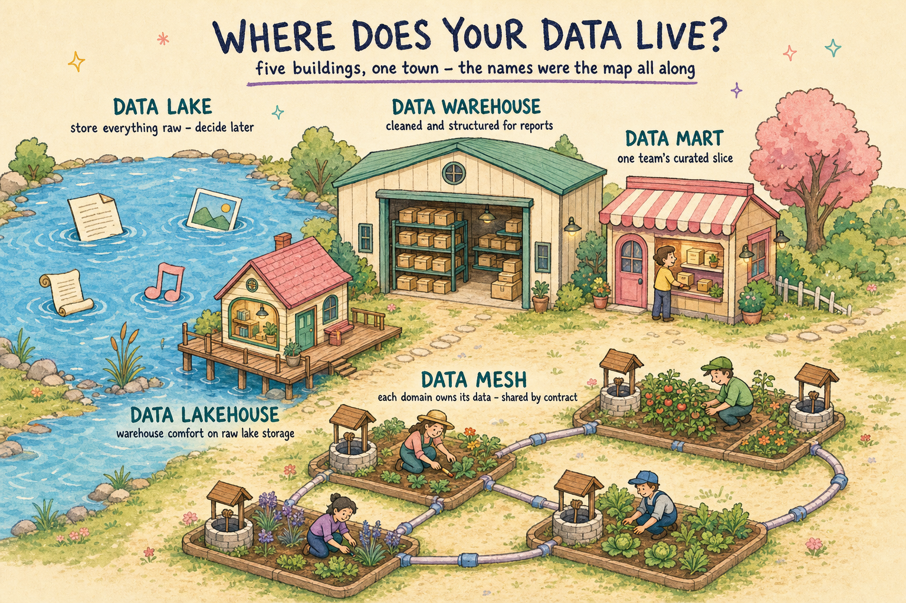

What it is: one big store where data lands raw, in its native format - files, logs, images, events. Structure is applied later, at query time.
Best at: data science and ML, and keeping everything cheaply before you know what questions you will ask.
Where it goes wrong: with no owner and no catalog, the lake silts up into a data swamp - everything is in there, nothing can be found.
What it is: the central store of cleaned, modeled, structured data. Every box earned its shelf before it got in.
Best at: BI, reporting, and trusted KPIs - one agreed version of the numbers the board sees.
Where it goes wrong: slow to change. Every new source needs modeling work up front, so the backlog becomes the bottleneck.
What it is: a small, subject-specific cut of the warehouse - a finance mart, a marketing mart - curated for one team's questions.
Best at: fast, focused self-service for one department without wading through the whole estate.
Where it goes wrong: marts multiply and drift. Five marts, five definitions of "revenue" - and a quarter of arguing about whose is right.
What it is: warehouse-grade tables and transactions built directly on cheap lake storage - one copy of the data serving both worlds.
Best at: teams that want BI and ML on the same platform without copying data between a lake and a warehouse.
Where it goes wrong: "one platform" does not remove the work - it still needs the modeling discipline of a warehouse, or it is just a lake with a nicer roof.
What it is: each domain owns and serves its data as a product - its own well, its own gardener - connected by shared contracts and standards.
Best at: large orgs where the central data team has become the bottleneck for every request.
Where it goes wrong: without real ownership and enforced standards, "everyone owns their data" becomes nobody owning any of it.
Not "which one is best" - they solve different problems, and most companies run three at once.
The real axis is who owns the water quality. In the lake, warehouse, mart and lakehouse, a central team does. In the mesh, every gardener does.
Pick the architecture whose ownership model your org can actually staff - the diagram is the easy part.